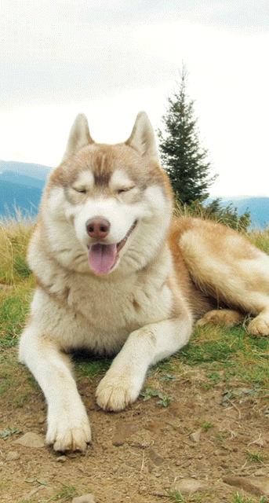
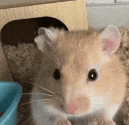

Perro
El perro es leal, protector y muy sociable. Es ideal para familias.

Gato
El gato es independiente y limpio. Perfecto para espacios pequeños.

Conejo
El conejo es tranquilo, suave y muy tierno. Ideal como mascota.

Loro
El loro es inteligente y colorido. Puede imitar sonidos y palabras.

Pez
Los peces son tranquilos y decorativos. Ideales para relajarse.

Hámster
El hámster es pequeño, activo y fácil de cuidar. Muy popular.